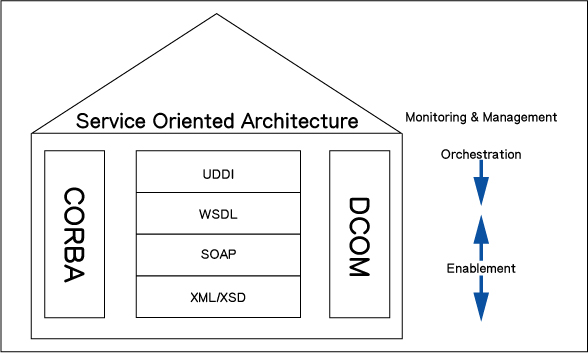
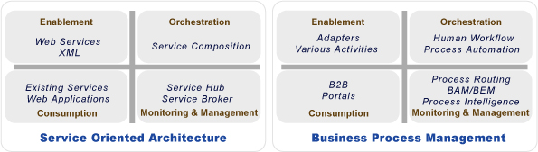
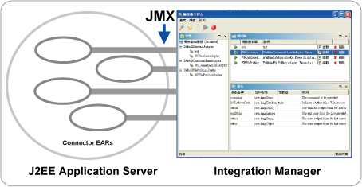
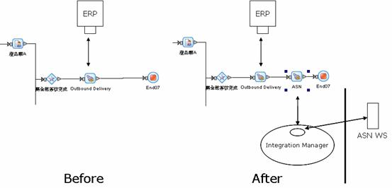

.png) |
 |
||||||
|
|
[2005-12-16] |
|
| [2005-09-12] | |
| Business Process Management (BPM) will Integrate BI Applications | |
| [2005-01-12] | |
| The Effect of SOA on Information Systems | |
The Effect of SOA on Information Systems |
Originally Published in the Special Issue of iThome Software Technology Application 2005/01/12 By LIU, Haishan, Vice President of AboveE Professional Services Department |
Service Oriented Architecture (SOA) and Business Process Management (BPM) have become the two most popular topics in the IT industry. According to the Gartner Group, when enterprises are faced with a rapidly changing and highly competitive environment, it must build a strong IT architecture to quickly respond to various business situations. Gartner Group further pointed out in June 2004 that enterprises must reconsider their internal IT architecture and build a foundation based on SOA with BPM at its core. This is a process that enterprises wanting to become a Real-Time Enterprise (RTE) must journey through. |
The Basic Concept, Definition, and Properties of SOA |
Since the introduction of web services such as XML, SOAP, WSDL, and UDDI, they have quickly become technology standards used around the world and have developed various applications. The room for imagination is unlimited. As resulted, the concept of SOA was created. The basic concept of SOA simply put is focused on the creation of various services, through the detailed descriptions of each service, and well defined (Input/Output) interfaces, services are linked to create different application systems. As well, each service may have different needs and have are connected with one another to share the common benefit. |
The raise of SOA and Web Services related technologies becoming standards are closely related. So Web Services is often perceived as the same as SOA. Yet, SOA is not restricted to only Web Services. In the past, the once popular CORBA, and the RMI and JNDI in DCOM or JAVA being promoted by Microsoft ware all methods that can realize SOA. But platform venders such as Microsoft, Sun Microsystems, or IBM have all released development tools for Web Services. Even application system venders, such as SAP, Seibel, and PeopleSoft have all introduced next generation application systems that are web services oriented. It cannot be denied that Web Services is the best method to implement SOA (Diagram 1) |

|
Actually, the IT environment in today's enterprise, whether was the mentality of not wanting to put all eggs in one single basket or wanting to select the best product in each area, most enterprise IT environments do not overly consist of products from just one software vender. When considering the ability to ensure past IT investment and the ability to maintain the development of the IT structure while bringing the benefits of IT systems, the deployment of SOA being deployed at the center of most enterprises. According to research from Gartner Group, most of the top 2000 global enterprises will have deployed SOA solutions before 2007. |
The Relationship Between SOA and BPM, as well as Their Own Individual Roles |
Business Process Management (BPM) has become another popular topic in the IT industry. On one hand, it promotes object oriented thinking to reduce the distance between Business and IT. On the other hand, it promotes the benefits of reduced programming development time to increase productivity. But in the past, faced with various different application systems used within enterprises, to actually deploy it would require significant resources to integrate existing resources. Also the development and connecting method are different for each system, so opening and sharing resources has been hard to realize. The rise of Web Services provides a standard open integration technology that provided a new source of energy for Business Process Management Systems (BPMS). With Web Services as the shared language of processes, such as IBM's WSFL and Microsoft's XLANG, which were subsequently combined to create the Business Process Execution Language (BPEL), which is aiming to become the standard BPMS supported language. |
Actually analyzing SOA and BPM, it can be discovered that the concepts of the two correspond to each other. For example, BPM defines and monitors the execution while business processes are loosely coupled. A part of the process can be replaced or strengthened without losing the original purpose of the process. The basic building blocks of process are activities, which each activity completing a specific function. |
|
On the other hand, SOA architectures are based on services. The purpose of each service is to solve a specific problem, providing a specific service. But when faced with business or application problems, a single service could at most satisfy partial features, and the solution is to link each service and monitor their execution status. Such as the task of accepting orders require connecting services involved in checking available credit, checking available inventory, and creating an order form on the ERP |
Therefore from an IT point of view, BPMS provides SOA a quick method in linking each service while also providing management and management capabilities. A change in the linking method is a change in the process. From a business or applications point of view, SOA enables BPM to execute processes in a production environment much easily. Changes in process steps can be made by connecting different services. Since the method in connecting services has been standardized, it is not a headache anymore when faced with integration problems. |
Ovum Research pointed out that SOA enables business to deploy BPM with less difficulty and start generating benefits more quickly. Gartner Group says that BPM provides SOA with the building block application vision results in a close partnership between the two. These all explain that SOA and BPM hold complementing roles whether from a technology or business application viewpoint. (Diagram 2) |
 Diagram 2: Corresponding Components of SOA and BPM |
SOA is Built on BPM and Web Services |
The core concept of the lower levels of SOA is to convert software into reusable and sharable services. Therefore, to establish the structure of SOA, the first step is to analyze which features in each application system need to be converted into services. The general intuitive method is to check which features appear to repeat in each system, then use this as a basis to decide which features should be converted into services. Another method is starting from the process, through cooperation between the IT and business departments; carefully locate and analyze the individual steps of the processes to on one hand determine which features need to be converted into services from the practical needs of processes. On the other hand, through carefully locating and analyzing the processes to improve the processes. |
Once a service feature has been identified, we can use the Facade design modeling method to create a few service interfaces. Through programming tools (IDE), such as JBuilder, IBM WSAD, or .Net Studio, convert these interfaces into Web Services. Then generate the WSDL service description method. Next, by using BPMS process design tools to configure each of the services as steps within a process and then linking the processes together create a Web Service Capable BPMS, and can release the design processes as Web Services that provide process services consisting of complex logic. |
Case Study Analysis |
Most domestic applications of web services are applied to integration of B2B. But the establishment of the SOA concept and structure is slowly proceeding within domestic enterprises. The author has successfully been involved in assisting many customers, from process design, through analysis and construction, gradually specifying the requirements that the ERP system needs to provide. Though the BPMS Adapter Framework, package and publish it on an Integration Manager, so that it becomes a service that can be called and supports JMX management (Diagram 3). Then describing in each process design the sequence of each feature and their interaction with other features in assisting customers to quickly meet predefined goals. |

|
Using a public electronic component distributor an example. It has already deployed the BPM system and is gradually adding company processes into the BPM System to be managed and supported. It has already established credit checking, inventory checking, and creating orders as services on the Integration Manager that can be as services in Adapter act ivies. |
To meet the requirements of downstream customers, to speed up the original process for delivering goods, which starts with a sales assistant apply on a portal, after passing credit checks and the authorization of related personnel, the Outbound Delivery process in the ERP can finally be activated. All the above has been integrated into one single Web Services step. Through the Web Services provided by customers, the delivery notices can be delivered to the customers' information system through adapters in real time. (Diagram 4), providing customer with the needed real time information and was deployed simultaneously with the customer's Web Services B2B system. These case not only demonstrated the rapid reaction of the SOA and BPM, but also increasing the level of customer perception and satisfaction. |

|
Actually while enterprises seek operating efficiency and lowering costs, SOA provides a very good IT infrastructure blueprint. But by not deploying BPM to link Business and IT personnel to work toward a common goal, finding the correct matters, and implementing it at the IT level to make the execution process more effective. Otherwise, when Business and IT each does it own thing, they would often have the wrong goals, and cannot make things more efficient, while wasting company resource. So even if SOA is introduced, the results of would only be limited to convenient IT systems integration. |
Copyright 2000-2011 AboveE Technology Inc., All rights reserved. |
Home | Contact Us | Training |